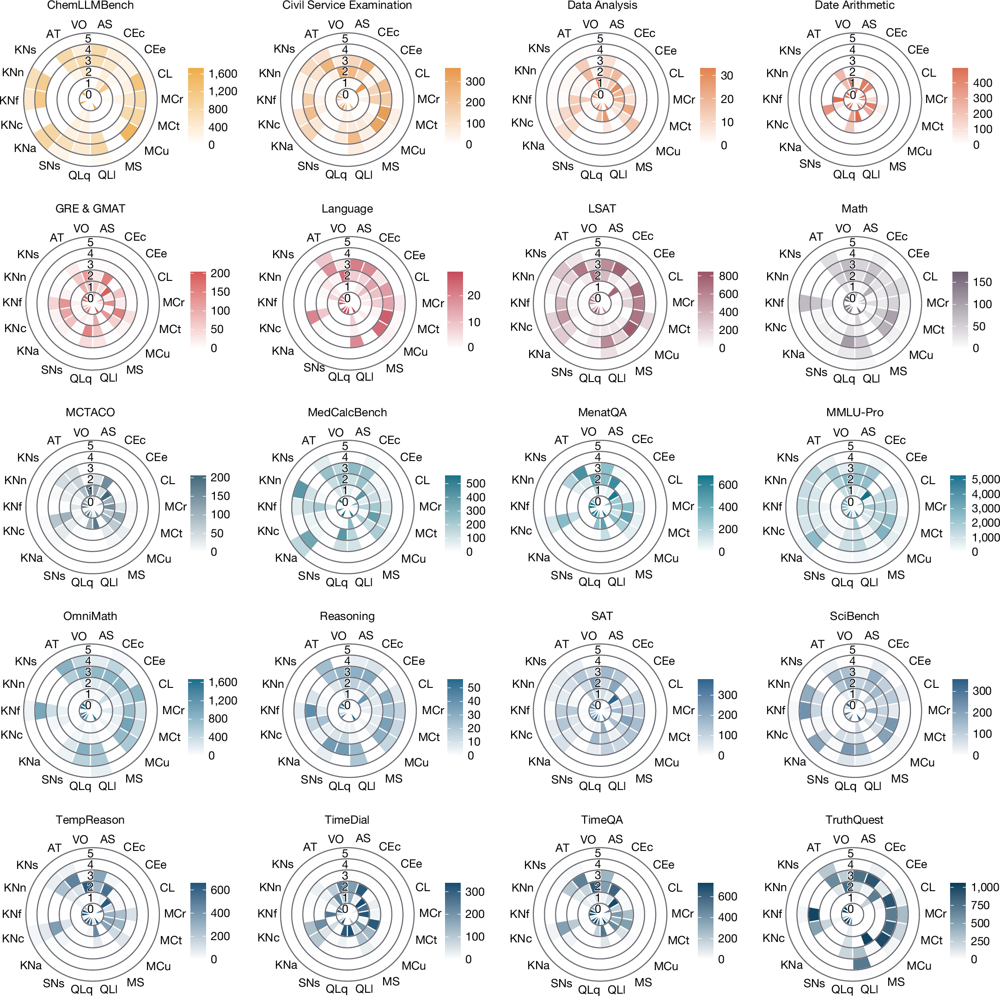
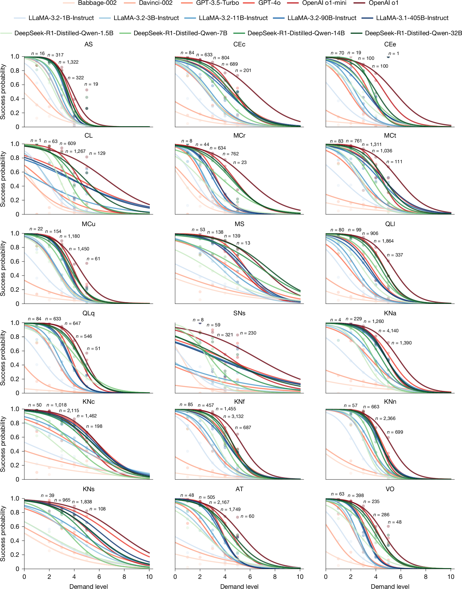
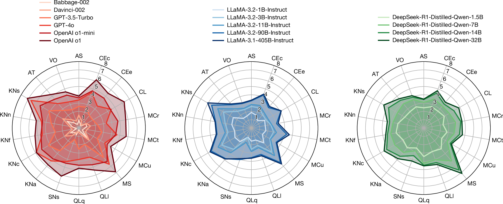

论文资料
General scales unlock AI evaluation with explanatory and predictive power
已取得公开摘要，图文解读尚未完成
已取得公开摘要，图文解读尚未完成。取得完整资料并通过核验后，这个地址会更新为图文解读。
公开摘要
Ensuring safe and effective use of artificial intelligence (AI) requires understanding and anticipating its performance on new tasks, from advanced scientific challenges to transformed workplace activities 1–3 . So far, benchmarking has guided progress in AI but has offered limited explanatory and predictive power for general-purpose AI systems 4–8 , attributed to limited transferability across specific tasks 9–11 . Here we introduce general scales for AI evaluation that elicit demand profiles explaining what capabilities common AI benchmarks truly measure, extract ability profiles quantifying the general strengths and limits of AI systems and robustly predict AI performance for new task instances. Our fully automated methodology builds on 18 rubrics, capturing a broad range of cognitive and intellectual demands, which place different task instances on the same general scales, illustrated on 15 large language models (LLMs) and 63 tasks. Both the demand and the ability profiles on these scales bring new insights such as construct validity through benchmark sensitivity and specificity and explain conflicting claims about whether AI has reasoning capabilities. Ultimately, high predictive power at the instance level becomes possible using the general scales, providing superior estimates over strong black-box baseline predictors, especially in out-of-distribution settings (new tasks and benchmarks). The scales, rubrics, battery, techniques and results presented here constitute a solid foundation for a science of AI evaluation, underpinning the reliable deployment of AI in the years ahead.
原图未改动。以下图注来自标注的来源，不据此补写摘要未报告的实验结论。
已取得的论文原图

原文图注与出处
Here we show LLM capability profiles ( a ; DeepSeek-R1-Distilled-Qwen-14B, estimated as discussed in the section titled ‘Explanatory power analysis: profiling LLM abilities’) and four different ‘reasoning’ benchmark demand profiles ( b ; GSM8K, OlymMATH Easy, GPQA and OlymMATH Hard, for which each slice represents the frequency of demand levels for each capability, with darker colours representing higher frequency). Researchers, developers and users can intuit that performance is expected to be high for the benchmark GSM8K but worse for the other three. Moreover, these profiles explain apparently contradicting findings, such as the accuracy of DeepSeek-R1-Distilled-Qwen-14B on GSM8K, OlymMATH Easy, GPQA and OlymMATH Hard being 90.50%, 61.80%, 59.10% and 13.30%, respectively, despite all of these benchmarks supposedly testing mathematical reasoning according to their creators. Indeed, OlymMATH Easy has lower demands for quantitative reasoning (QLq), logical reasoning (QLl) and inductive reasoning (CL) than OlymMATH Hard but similar demands for all other dimensions. Instead, GPQA yields worse performance than OlymMATH Easy, despite being easier in reasoning dimensions, because of its low specificity, with high demands for some knowledge dimensions beyond KNf (Formal Sciences), such as KNn (Natural Sciences) and KNa (Applied Sciences). Further details of these benchmarks associated with ‘reasoning’ benchmarks are discussed in Supplementary Information Section 1.12 . Source data
Zhou, Lexin et al.
原文图页 · CC BY 4.0



原文图注与出处
The x -axis shows the demand levels for that dimension and the y -axis the average performance (probability of success) for each level. We ensure all bins are weighted the same in the fit as the largest one (except those bins with less than 100 instances, which use a proportional weight for robustness). The curve is a logistic fit with an anchor at coordinates (20, 0), accounting for 50% of the total weight. The curves thus prolong beyond level 5 and this is why we show the x -axis from 0 to 10, even if the present version of the scales only has levels up to 5. Source data
Zhou, Lexin et al.
原文图页 · CC BY 4.0

原文图注与出处
An ability of l means that there is 50% probability of the model to succeed on questions at demand level l (that is why some abilities go beyond 5). In contrast to radial plots usually shown for LLMs in the literature 47 , 48 , the values shown here are actual abilities on a ratio scale (0, ∞ ) and the values (in expectation) are more robust to changes in the difficulty distribution of the benchmarks used. In Supplementary Information Section 1.4 , we show clear scaling curves of model abilities as a function of number of parameters. Source data
Zhou, Lexin et al.
原文图页 · CC BY 4.0